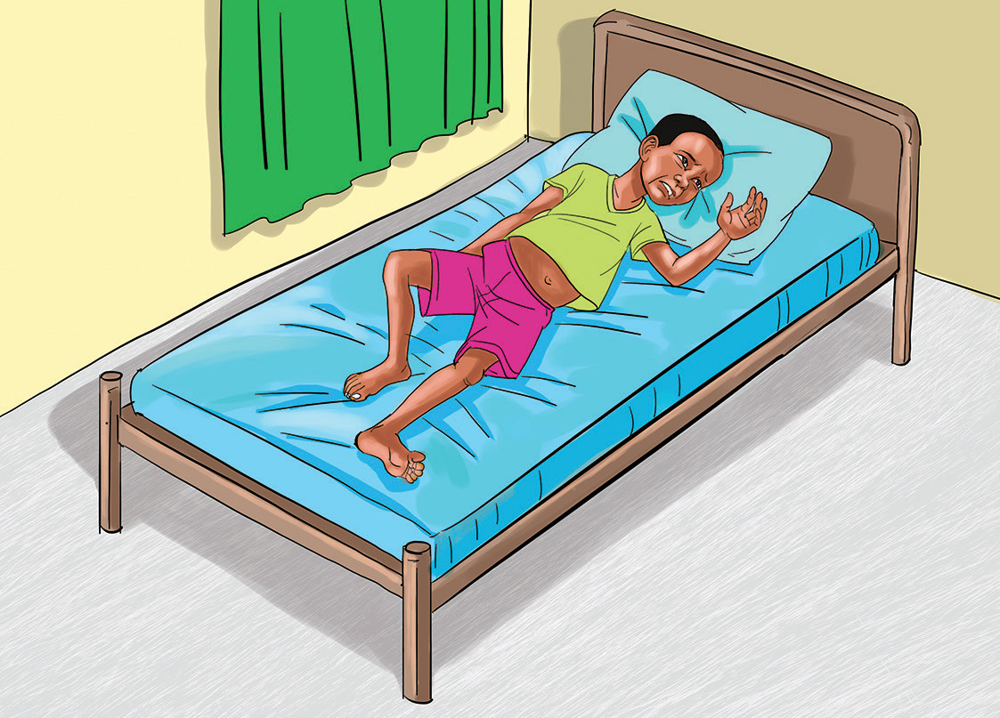

Pepopunda
Huu ni ugonjwa unaosababishwa na bakteria. Vimelea vya ugonjwa huu huambukizwa kupitia ngozi yenye vidonda au michubuko. Viini hivyo huishi katika udongo, vumbi au kwenye vinyesi vya wanyama.
Dalili za pepopunda
Dalili za pepopunda ni homa kali, misuli kukaza, na maumivu makali kwenye uti wa mgongo. Vilevile, taya kukaza na kushindwa kufunguka. Aidha, shingo kukakamaa na kupinda. Kielelezo namba 4 kinaonesha mgonjwa wa pepopunda.

Namna ya kuzuia pepopunda
Ugonjwa wa pepopunda kwa watoto wachanga hudhibitiwa kwa kupatiwa chanjo. Chanjo hiyo husaidia kujenga kinga dhidi ya ugonjwa huo. Mtu yeyote akipata jeraha lolote, hushauriwa kwenda hospitalini kupata chanjo ya pepopunda. Chanjo hiyo ni lazima itolewe ndani ya muda wa siku saba tangu mtu apate jeraha.